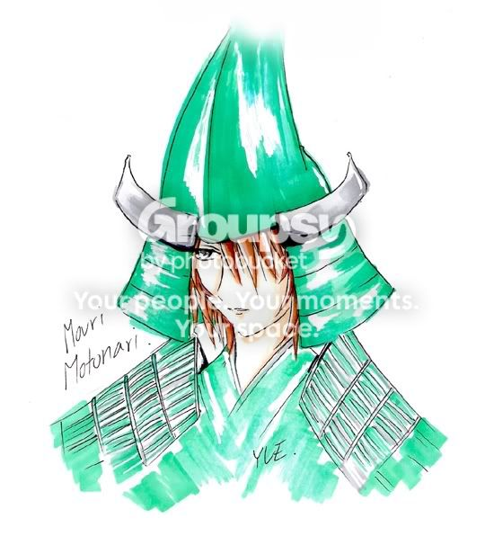

ฮาอยู่ค่ะ แต่ไม่ค่อยเข้า เปิดเทอมแย้วว
ป.ล. ฝีมือพี่นาโอะ ไม่ตกเลยย
ป.ล. ฝีมือพี่นาโอะ ไม่ตกเลยย
http://eco.froztic.in.th/archive/ecofanclub/
http://eco.froztic.in.th/archive/ecofanclub/viewtopic.php?f=21&t=56418
Nanase เขียน:ปัญหาเวลาแสกนอยู่ที่สีเพี้ยนและสีซีดจางทำให้ดูไม่เนียนค่ะ พอมาปรับสีให้เข้มขึ้นในคอมจะทำให้ส่วนที่ด่างเห็นชัดเจนยิ่งขึ้นค่ะ

Naoko เขียน:ต้องขอโทษทุกๆคนด้วยนะคะ ตอนใหม่จิงๆมันเสร็จแล้วค่ะ
แต่ว่าเครื่องแสกนเรามันเจ๊งอ่าค่ะ ไว้เราจะหาวิธีเอามาลงนะคะ
ขอโทดทุกๆคนจิงๆค่ะ :yoyo106:
ดูมา 30 กว่าตอน พะ.....เพิ่งสังเกตในตอนล่าสุดนี่ว่า
นานาเสะก็บึ้มเหมือนกันแฮะ